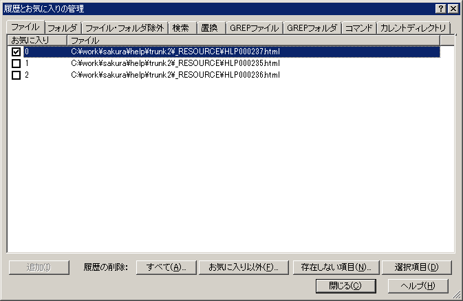

履歴の管理
最近使ったファイルおよびフォルダーにお気に入りを設定します。
お気に入りに設定したものは、最近使ったファイルおよびフォルダーメニューにマークが付きます。
お気に入りのファイルおよびフォルダーは、履歴から消えることはありません。
ファイル・フォルダー除外で最近使ったファイル・フォルダーへの登録を除外することができます。
除外する前に最近使ったファイル・フォルダーへ追加されていたものはそのまま残ります。

［追加］ボタン
新しく項目を追加します。
また、履歴をクリアすることができます。
［すべて］ボタン
すべての履歴を削除します。
[お気に入り以外］ボタン
お気に入り以外の履歴を削除します。
[存在しない項目］ボタン
存在しないファイルやフォルダーの履歴を削除します。
[選択項目］ボタン
選択行の履歴を削除します。
右クリックメニュー
[編集］メニュー
選択中の項目の1つめを編集します。
[新規追加］メニュー
新規に項目を追加します。
[除外リストに追加］メニュー
選択中の項目を履歴ファイル・フォルダー除外へ追加します。
各項目はDelキーでも削除できます。
■マクロ構文
・構文: OptionFavorite( );
・記録: ×